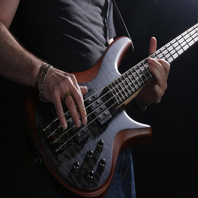

In the 1930s, musician and inventor Paul Tutmarc of Seattle, Washington, developed the first electric bass guitar in its modern form, a fretted instrument designed to be played horizontally. The 1935 sales catalog for Tutmarc's company Audiovox featured his "Model 736 Bass Fiddle", a solid-bodied electric bass guitar with four strings, a 30+ inch scale length, and a single pickup. Around 100 were made during this period. Audiovox also sold their "Model 236" bass amplifier
According to the New Grove Dictionary of Music and Musicians, an Electric bass guitar, usually with four heavy strings tuned E1, A1, D2, G2. It also defines bass as Bass (iv). A contraction of Double bass or Electric bass guitar. According to some authors the proper term is "electric bass". Common names for the instrument are bass guitar, electric bass guitar and electric bass and some authors claim that they are historically accurate. A bass guitar whose neck lacks frets is termed a fretless bass

In 1972, Alembic established what became known as "boutique" or "high-end" electric bass guitars. These expensive, custom-tailored instruments, as used by Phil Lesh, Jack Casady, and Stanley Clarke, featured unique designs, premium hand-finished wood bodies, and innovative construction techniques such as multi-laminate neck-through-body construction and graphite necks. Alembic also pioneered the use of onboard electronics for pre-amplification and equalization.
Active electronics increase the output of the instrument, and allow more options for controlling tonal flexibility, giving the player the ability to amplify as well as to attenuate certain frequency ranges while improving the overall frequency response (including more low-register and high-register sounds). 1976 saw the UK company Wal begin production of their own range of active basses. In 1974 Music Man Instruments, founded by Tom Walker, Forrest White and Leo Fender, introduced the StingRay, the first widely produced bass with active (powered) electronics built into the instrument. Basses with active electronics can include a preamplifier and knobs for boosting and cutting the low and high frequencies.
In the mid-1970s, five-string basses, with a very low "B" string, were introduced. In 1975, bassist Anthony Jackson commissioned luthier Carl Thompson to build a six-string bass tuned (low to high) B0, E1, A1, D2, G2, C3, adding a low B string and a high C string